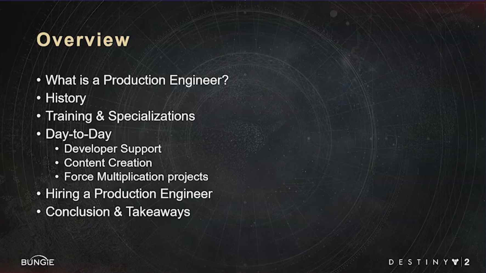
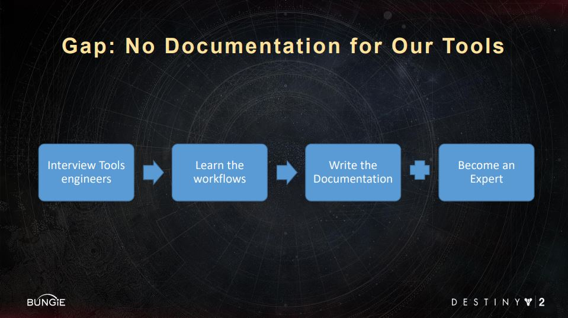
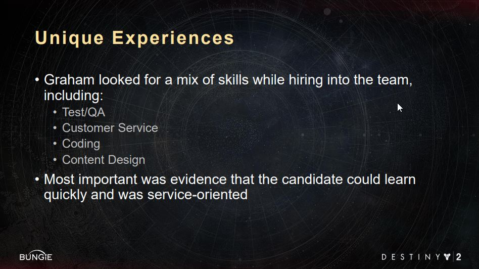
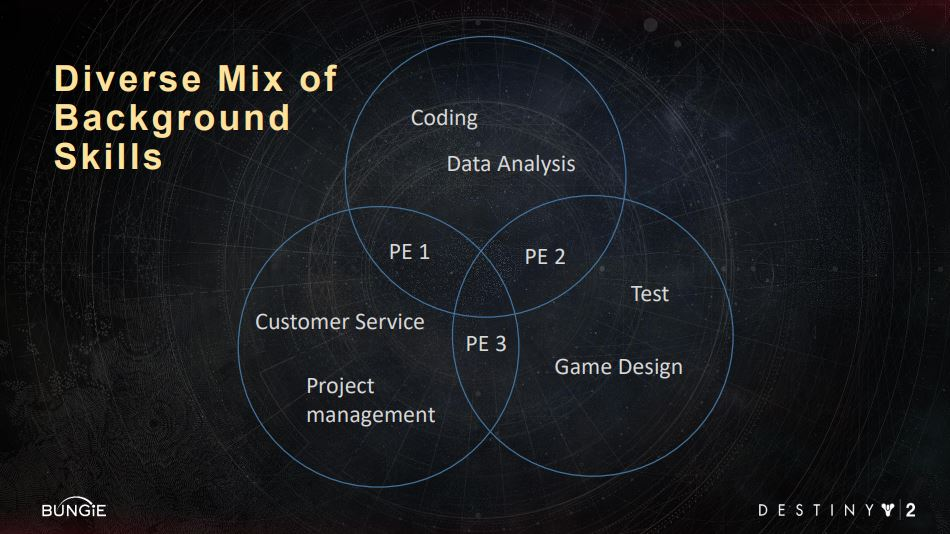
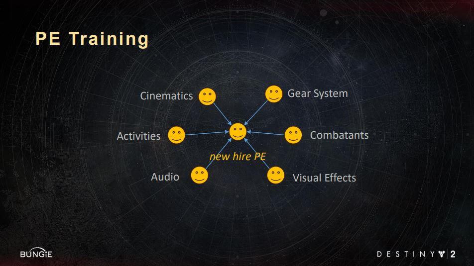
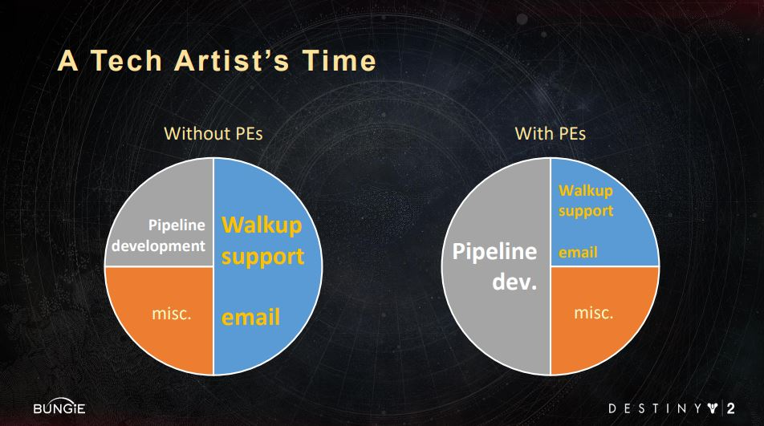
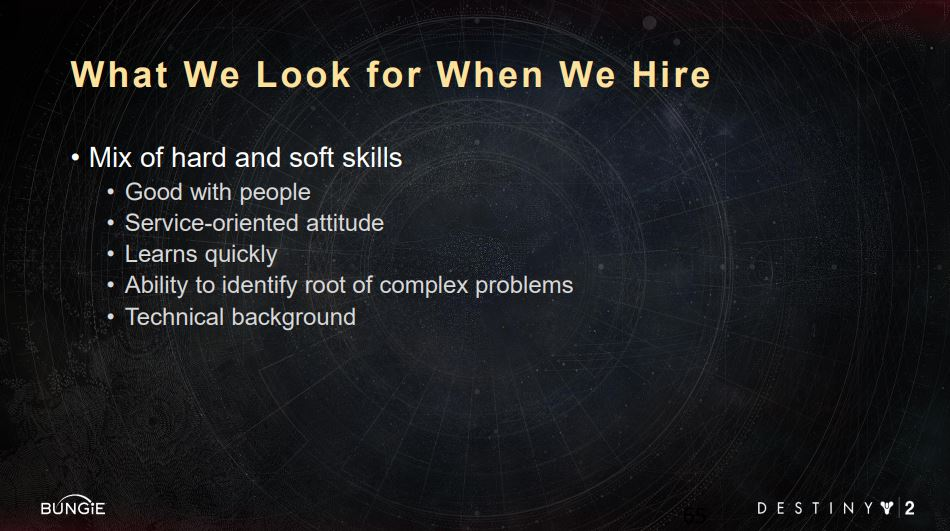

Notes for "Bungie's Force Multipliers - Production Engineers" GDC2019
TLDW Summary: How Bungie organized a dedicated task force of engineers to stay on top of production challenges, blocking issues and shielding Tech-Artists and Engineers from random support requests.
Keywords
- Support
- Tools Role
- Production
Presentation Table of Contents

Presentation Timestamps
- at min 1 What is a Production Engineer (PE)?
- at min 6 History
- at min 10 Training & Specializations
- at min 13 Day-to-Day
- at min 33 Hiring a Production Engineer
- at min 37 Conclusion & Takeaways
- at min 38 Q&A
What is a Production Engineer (PE)?
timestamp: 1 min into the presentation
- PE is a dedicated engineering role that comes to the rescue when a content creator hits an issue that blocks his/her work.
- PEs also track down the root cause of an issue and bring the issue up to the teams that can fix it.
- PEs are aware of all of the current issues that are blocking developers in the studio
- they know how to fix the issue
- they know how to work around the issue
- they know who is fixing the issue
- The skill set of a PE is a combination of an Engineer, Tech Artis, Tester, and a Producer
- PEs look for possible inefficiencies in the workflows of devs that are getting blocked
- PEs spot workflow automation potential
History
timestamp: 6 min into the presentation
- the PE role was formed from a need to have a dedicated person help with random technical issues on the development team
- there were several gaps in the production knowledge base:
- missing tools documentation
- missing workflow documentation
- 
- when the PE team was formed there were about 3-4 PEs
- Bungie tries to keep the PE ratio to 1:20 users
- PEs should have the following traits
- 
- Diverse Backgrounds
- 
Training & Specializations
timestamp: 10 min into the presentation
- PEs have a training regimen for new hires
- a PEs from different teams train the new hire
- 
- a PE is a generalist but usually will specialize in a particular area of the game production
- PEs are also responsible for bringing up to speed new hires in the “users” team
Day-to-Day
timestamp: 13 min into the presentation
- there is usually a PE in walking distance from a Content Creator
- details on managing Special Email Support list and issue tickets at min 15
- about 15% of issues need to be escalated beyond the PE team
- PEs help Tech-Artists and Engineers focus on their primary work duties, thus maximize the effectiveness of those teams
- 
- PEs can temporarily act as a substitute of a Content Creator and step into that role knowing the process and workflows
- PEs are in a constant search for the underlying issue
- is it workflow related?
- is it tool related?
- is there enough staff?
- 20% of a PE’s time is spent in projects that solve small to mid-sized issues that the engineers don’t have time to address
- examples:
- BungieLauncher
- Cleanup of old and not used content
- examples:
Hiring a Production Engineer
timestamp: 33 min into the presentation
- key skills
- 
- “foot in the door” type of a position - not a bad thing
Q&A
timestamp: 38 min into the presentation
- it is part of a PE’s job to drive cultural change
- like documentation
- when the PE team was set up the hiring was done internally
- PE’s time is organized depending on the situation
- it is vital for a PE to attend retrospectives
These notes are just the main ideas of the talk. They don’t contain anecdotes and examples. If you want to learn more, I would advise watching the talk on the GDC Vault.
The Toolsmiths

I took these notes as part of our little “Book Club” for GDC Vault Videos The Toolsmiths #vault club
Jo King-Yost is a member of the Toolsmiths community. The Toolsmiths are a community of Game Tool Developers that are passionate about improving the way people make games.
Join us on Slack.
Join us on Twitter.
Links
- GDC 2019 Bungie’s Force Multipliers: Production Engineers
- Slides for GDC 2019 Bungie’s Force Multipliers: Production Engineers